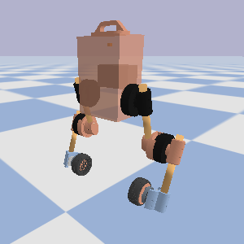

- Generated by
 1.8.20
1.8.20
|
upkie
11.0.0
Open-source wheeled biped robots
|
There are two real-robot spines: the mock spine, and the pi3hat spine.
The Bullet spine runs agents in the Bullet 3 simulator. It can be started as a standalone process that will keep on running while waiting for agents to connect.
The easiest way to start a simulation spine is to run the simulation script from the repository:

The script will run pre-compiled binaries, downloading them from the latest release if necessary.
The mock spine is useful to run an agent on the robot without firing up the actuators. It works exactly as the pi3hat spine, replacing "pi3hat" with "mock" in all instructions.
The pi3hat spine is the one that runs on the real robot, where a pi3hat r4.5 is mounted on top of the onboard Raspberry Pi computer. To run this spine, you can either download it from GitHub, or build it locally from source.
To download the latest release, assuming your robot is connected to the Internet, you use the upkie_tool command-line utility:
Alternatively, you can manually go to the Release page, download pi3hat_spine from the assets of the latest release and scp it to /usr/local/bin on your robot.
Once the spine is installed, start it from the command line:
You can then run any agent in a separate shell on the robot, for example the PID balancer from the examples directory: